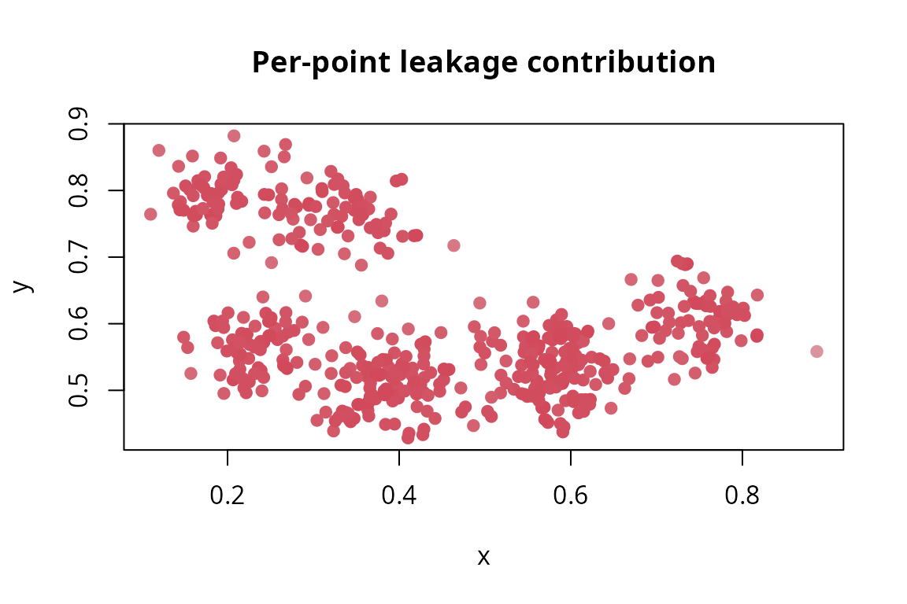

Getting started: detecting and quantifying spatial leakage
Source:vignettes/spLeakage.Rmd
spLeakage.RmdThe problem in one paragraph
When you validate a spatial model with an ordinary random train/test split, nearby points tend to land in both the training and the test set. Because spatial data are autocorrelated (close locations have similar values), each test point usually has a training neighbour just a short distance away. Your model is therefore graded on a task close to interpolation — even though, at deployment, it must predict at locations that are often far from any training data. The reported error comes out too low: it is optimistically biased. This is spatial information leakage, and it is why headline accuracy numbers for maps are routinely over-confident.
What spLeakage does (and does not) do
A mature ecosystem already generates leakage-resistant folds
(CAST, blockCV, spatialsample,
mlr3spatiotempcv). spLeakage does something
different: it audits a split you already have (or a
published result) and answers three questions.
-
Is there leakage, and how much? →
detect_leakage()returns the signed Spatial Leakage Index (SLI). -
So how inflated are my numbers? →
estimate_optimism()/predict_optimism()turn leakage into a percentage inflation of your accuracy. -
What should I have done instead? →
recommend_validation()gives design-aware advice (including when spatial CV is the wrong choice).
The single idea that ties these together:
Leakage and optimism are only well-posed relative to a declared sampling design, estimand, and prediction target. The same split can be leaking, correct, or pessimistic depending on those three declarations.
So before measuring anything, you tell spLeakage
where the model will actually be used (the prediction target).
Everything is measured against that.
A worked example: a clustered survey
Real ecological, soil and disease-mapping samples are rarely a neat grid; they are clustered — surveys concentrate where it is convenient or interesting to sample. Clustering is the canonical leakage regime, so we simulate it: eight cluster centres with points scattered tightly around each.
set.seed(3)
nc <- 8 # number of clusters
centers <- cbind(runif(nc, 0.1, 0.9), runif(nc, 0.1, 0.9))
cl <- sample(nc, 500, replace = TRUE)
xy <- centers[cl, ] + cbind(rnorm(500, 0, 0.04), rnorm(500, 0, 0.04))
d <- data.frame(x = pmin(pmax(xy[, 1], 0), 1), y = pmin(pmax(xy[, 2], 0), 1))
d$z <- sin(2 * pi * d$x) + cos(2 * pi * d$y) + rnorm(500, 0, 0.15) # smooth spatial signalThe model is intended to produce a wall-to-wall map over the whole unit square, not just to predict near the surveyed clusters. We declare that deployment target explicitly — it is what the leakage will be measured against:
s <- seq(0.025, 0.975, length.out = 20)
tgt <- prediction_target(grid = as.matrix(expand.grid(x = s, y = s)), type = "grid")
tgt
#> <prediction_target> type = 'grid'
#> prediction points : 400
#> geographic CRS : FALSEprediction_target() builds the set of locations the
model is deployed on. Use type = "grid" for wall-to-wall
mapping, type = "newdata" for a specific set of prediction
points, or type = "interpolation" for prediction
within the sampled footprint.
Step 1 — Detect leakage
We grade a naive random 10-fold split against that target:
folds <- sample(rep_len(1:10, nrow(d)))
lk <- detect_leakage(d, split = folds, target = tgt, response = "z",
coords = c("x", "y"), n_boot = 300)
lk
#> <leakage_diagnosis>
#> target : grid | n = 500, test = 500, folds = 10
#> SLI_rho (signed) : +0.138 [OPTIMISTIC leakage] 90% CI [+0.106, +0.185]
#> SLI_d (signed) : +0.053 (A = +0.1539, phi = 2.883) 90% CI [+0.040, +0.076]
#> retained corr. : c_obs = 0.990 vs c_pred = 0.852
#> W (NNDM) / delta : 0.1539 / +1.00How to read this output.
-
SLI_rho (signed)is the headline index. It is the difference in retained spatial correlation between cross-validation and deployment, on a scale:- positive → optimistic leakage (CV is easier than deployment; your error is too low),
- near zero → well matched (CV imitates deployment),
-
negative → pessimistic (CV is harder than
deployment; your error is too high — the Wadoux regime). The
90% CIcomes from then_bootMonte-Carlo draws over variogram uncertainty. If the interval excludes zero, the leakage verdict is statistically resolved.
-
retained corr.shows the two ingredients:c_obsis how much spatial correlation CV keeps to the training data,c_predhow much is available at deployment.SLI_rho = c_obs - c_pred. Here CV “sees” much more nearby signal than deployment will. -
SLI_d (signed)is the distance-form companion:Ais literally how much farther deployment reaches than CV pretended (in coordinate units), normalised by the variogram rangephi. -
W (NNDM) / delta:Wis exactly the (unsigned) NNDM/kNNDM Wasserstein statistic, included for comparability.deltais the directionality ratio: near means pure optimism, near pure pessimism, near the ECDFs cross (mixed) — in which case you should look at the plot rather than trust a single number.
See it, and see where it leaks
plot(lk) # observed (CV) vs target (deployment) NN-distance ECDFs
The red curve (test→train distances during CV) sits to the left of the blue curve (deployment→sample distances): CV test points are systematically closer to their training data than deployment points will be. That gap is the leakage.
A per-fold breakdown, and a map of which points leak most, are one call away:
summary(lk) # per-fold leakage contributions
#> <leakage_diagnosis>
#> target : grid | n = 500, test = 500, folds = 10
#> SLI_rho (signed) : +0.138 [OPTIMISTIC leakage] 90% CI [+0.106, +0.185]
#> SLI_d (signed) : +0.053 (A = +0.1539, phi = 2.883) 90% CI [+0.040, +0.076]
#> retained corr. : c_obs = 0.990 vs c_pred = 0.852
#> W (NNDM) / delta : 0.1539 / +1.00
#>
#> per-fold leakage (mean rho excess):
#> fold 1 : +0.140
#> fold 2 : +0.136
#> fold 3 : +0.139
#> fold 4 : +0.136
#> fold 5 : +0.137
#> fold 6 : +0.139
#> fold 7 : +0.138
#> fold 8 : +0.136
#> fold 9 : +0.140
#> fold 10 : +0.139
plot(lk, which = "map") # red points contribute most leakage
This per-point/per-fold decomposition of an arbitrary split is something a fold-generator cannot give you.
Step 2 — Quantify the optimism
A leakage score is abstract; practitioners want the consequence in
their own currency. estimate_optimism() re-evaluates the
model under a leakage-controlled, design-matched scheme (here spatial
block CV) and reports the gap.
opt <- estimate_optimism(d, split = folds, response = "z", coords = c("x", "y"),
control = "block")
opt
#> <optimism_estimate>
#> metric / control : RMSE / block
#> user CV error : 0.1965
#> controlled error : 0.4364
#> optimism : +0.2399 (+55.0% of controlled) [OPTIMISTIC (reported accuracy inflated)]-
user CV erroris what your random split reported. -
controlled erroris the (larger) error under the design-matched scheme. -
optimismis the difference, expressed as a percentage of the controlled error. A positive value means your reported accuracy is inflated by that much.
Optimism can legitimately be negative for a genuine probability sample — that is pessimism, and the tool reports it as such rather than hiding it.
Step 3 — Get a design-aware recommendation
What should you have done? The answer depends on facts the
coordinates cannot reveal — chiefly, the sampling
design. A designed cluster sample and a
convenience cluster sample can have identical point patterns
but require different validation. So spLeakage asks you to
declare the design; it never infers it.
recommend_validation(d, estimand = "prediction", design = "clustered",
target = "grid", coords = c("x", "y"))
#> <validation_recommendation>
#> estimand / design / target : prediction / clustered / grid
#> spatial CV appropriate : YES
#> recommended:
#> - NNDM / kNNDM CV
#> - Spatial block CV
#> avoid: Random k-fold CV (optimistic under spatial autocorrelation)
#> clustering flag (risk only): NN index = 0.71 (clustered)
#> rationale: Conditional predictive skill from a clustered sample for a 'grid' target: match the CV geometry to deployment (NNDM/kNNDM/buffered) so test points are as far from training as prediction points are from the sample.Read the recommended schemes and the avoid
line; the clustering flag is shown as a risk
indicator only, not as a basis for the recommendation.
Now watch the advice flip when the very same data are declared to be a probability sample with a population-mean estimand — the case Wadoux et al. make, where random validation is design-unbiased and spatial CV is over-pessimistic:
recommend_validation(estimand = "population", design = "probability", target = "grid")
#> <validation_recommendation>
#> estimand / design / target : population / probability / grid
#> spatial CV appropriate : NO
#> recommended:
#> - Design-based estimator (inclusion-weighted)
#> - Random CV
#> avoid: Spatial CV (introduces pessimistic bias for probability samples)
#> rationale: Population-mean map accuracy from a probability sample is unbiased under design-based inference; spatial CV is not appropriate here (Wadoux et al. 2021).This is the reconciliation in action: neither “always use spatial CV” nor “never use spatial CV” is correct — the right answer is a function of your declarations.
Put it together: a submission-ready scorecard
report_leakage() assembles the diagnosis, the optimism,
and the recommendation into one object you can drop into a methods
appendix.
rec <- recommend_validation(d, estimand = "prediction", design = "clustered",
target = "grid", coords = c("x", "y"))
report_leakage(lk, optimism = opt, recommendation = rec)
#> ================ spLeakage report ================
#> Leakage grade : C
#> --------------------------------------------------
#> <leakage_diagnosis>
#> target : grid | n = 500, test = 500, folds = 10
#> SLI_rho (signed) : +0.138 [OPTIMISTIC leakage] 90% CI [+0.106, +0.185]
#> SLI_d (signed) : +0.053 (A = +0.1539, phi = 2.883) 90% CI [+0.040, +0.076]
#> retained corr. : c_obs = 0.990 vs c_pred = 0.852
#> W (NNDM) / delta : 0.1539 / +1.00
#>
#> <optimism_estimate>
#> metric / control : RMSE / block
#> user CV error : 0.1965
#> controlled error : 0.4364
#> optimism : +0.2399 (+55.0% of controlled) [OPTIMISTIC (reported accuracy inflated)]
#>
#> <validation_recommendation>
#> estimand / design / target : prediction / clustered / grid
#> spatial CV appropriate : YES
#> recommended:
#> - NNDM / kNNDM CV
#> - Spatial block CV
#> avoid: Random k-fold CV (optimistic under spatial autocorrelation)
#> clustering flag (risk only): NN index = 0.71 (clustered)
#> rationale: Conditional predictive skill from a clustered sample for a 'grid' target: match the CV geometry to deployment (NNDM/kNNDM/buffered) so test points are as far from training as prediction points are from the sample.
#> ==================================================Where to next
-
Leakage channels beyond distance —
grouped/duplicated locations, covariate space, time, and large-scale
trend:
vignette("channels"). -
Quantify, correct, and design — the fast emulator,
the de-leaked estimate that corrects a published number, scheme ranking,
and optimal validation-survey design:
vignette("quantify-correct"). ```